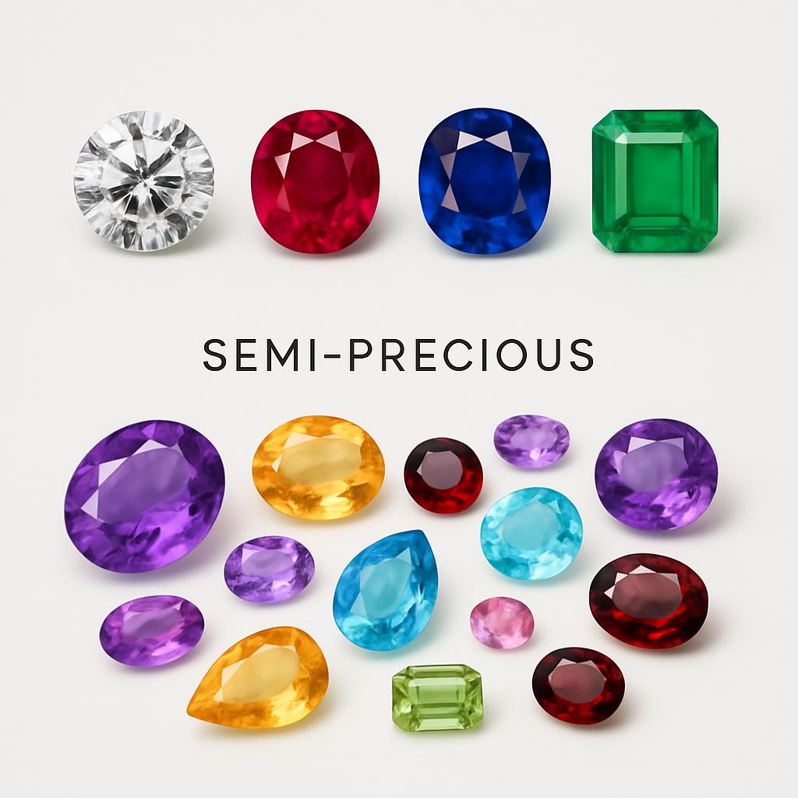

Precious vs Semi-Precious Stones
Understanding the difference between precious and semi-precious stones is fundamental in gemology. This classification is based on rarity, hardness, and beauty. The distinction helps determine value and appropriate use in jewelry.
Precious Stones
There are only four stones traditionally classified as precious: Diamond, Ruby, Sapphire, and Emerald. These stones are valued for their exceptional beauty, rarity, and durability.
Diamond
The hardest natural substance on Earth (10 on the Mohs scale), diamonds are pure carbon crystals. Their exceptional brilliance and fire make them the most popular choice for engagement rings.
Ruby
Red variety of corundum (9 on the Mohs scale), rubies get their color from chromium. The finest rubies are often more valuable per carat than diamonds.
Sapphire
All non-red varieties of corundum are called sapphires. Blue is the most well-known, but sapphires come in many colors including yellow, pink, and white.
Emerald
Green variety of beryl (7.5-8 on the Mohs scale), emeralds get their color from chromium or vanadium. They are known for their inclusions, called 'jardin' (garden in French).
Semi-Precious Stones
All other gemstones are classified as semi-precious. This includes popular stones like amethyst, citrine, garnet, peridot, turquoise, and many others. While beautiful and valuable, they are generally more abundant than precious stones.
What Makes Them Valuable?
- Rarity: How difficult they are to find in nature
- Beauty: Color, clarity, and brilliance
- Durability: Hardness and resistance to damage
- Size: Larger stones are exponentially more valuable
- Treatment: Natural stones are more valuable than treated ones